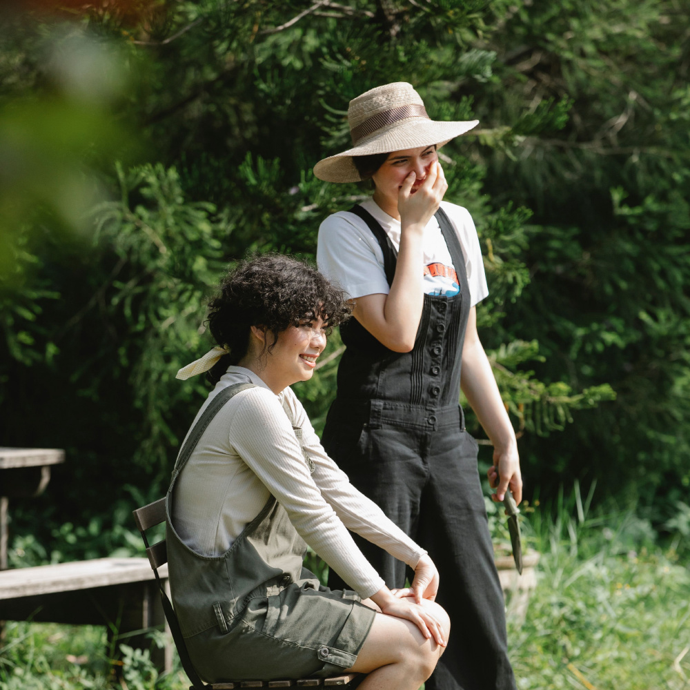
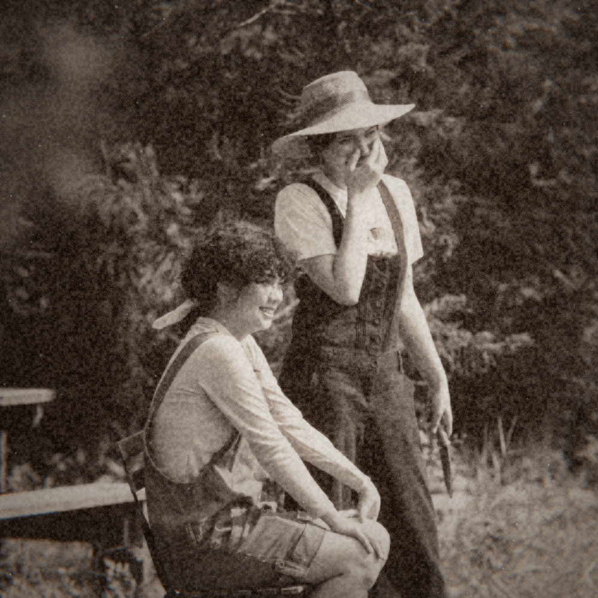

iPhone ile eski fotoğraf görünümü
iPhone fotoğraflarına 1890’ların havasını ver.
Ücretsiz 1895 dönemi, gerçek bir fotoğrafta önce–sonra karşılaştırması ve arkadaşlarını çekerken deneyebileceğin birkaç kadraj önerisi.
iPhone’da eski fotoğraf efektiyle çekim yapmak için Nostalgia Camera’nın 1895 dönemini seçebilirsin. Dönemi çekimden önce aç, canlı önizlemede kadrajı kur ve fotoğrafını çek. Bu dönem ücretsiz; kullanmak için Pro satın alman veya hesap açman gerekmiyor.
Ben uygulamanın geliştiricisiyim. Bu yazı kendi uygulamamı nasıl kullanabileceğini anlatıyor. İndirmeden önce, aynı fotoğrafın aşağıdaki iki halini karşılaştırabilirsin.


Fotoğraf: Gary Barnes / Pexels, Pexels lisansıyla kullanıldı. İşlenmiş örnek Nostalgia Camera’nın görüntü motorundan alındı. Bu, 1895’te veya uygulamanın kamerasıyla çekilmiş bir fotoğraf değil; günümüzde çekilmiş lisanslı bir fotoğrafın işlenmiş hali.
Kaydırmalı demoda karşılaştır ↗ Demo arayüzü İngilizce.
iPhone’da eski fotoğraf efektiyle nasıl çekim yapılır?
- Nostalgia Camera’yı aç. iOS kamera erişimi istediğinde izin ver; böylece canlı görüntüyü görebilirsin.
- Dönem seçiciden 1895 — Glass Plate’i seç. Efekti fotoğrafı çekmeden önce önizlemede gör.
- Yüzü aydınlıkta tut. Pencere kenarı veya dışarıda açık gölgeyle başla. Yüzün arka plandan ayrılıp ayrılmadığına bak.
- Aynı anın iki kadrajını çek. İlkinde ortamı da göster; ikincisinde biraz yaklaş ve ifadeye yer ver.
- Sonuçları karşılaştır. Yalnızca dokuyu değil, yüzü ve ifadeyi de incele. Uygulamadaki rastlantısal kusurlar her çekimde değişebildiği için kaydedilen kareler birebir aynı görünmeyebilir.
Web demosu önceden işlenmiş örnekleri gösteriyor; kendi fotoğrafını yükleme veya web kamerasıyla çekim özelliği yok. Kendi anını canlı kadrajla çekmek için iPhone uygulamasını kullan.
Sepya filtresinden farkı ne?
Yukarıdaki renkli fotoğrafta yaprakların yeşili ve kıyafetlerin renkleri ayrı ayrı belirgin. 1895 görünümünde bu ayrım büyük ölçüde açık ve koyu tonlara dönüşüyor. Görüntünün dokusu belirginleşiyor, ayrıntılar yumuşuyor, kenarlar koyulaşıyor.
Yalnızca kahverengi bir renk katmanı eklemek, ilk fotoğrafın temiz ve keskin ayrıntılarını büyük ölçüde bırakırdı. Burada renk, ayrıntı ve doku birlikte değişiyor. Bu görünüm belirli bir tarihî kamera veya kimyasal baskı sürecinin birebir yeniden üretimi değil.
Arkadaşlarını çekerken neye bakabilirsin?
Önce ifadeyi gör. Yüz gölgede kayboluyorsa arkadaşından biraz pencereye dönmesini iste veya kadrajı değiştir. Doku, görünmeyen bir ifadeyi geri getirmez.
Arka planı sadeleştir. Yüzün arkasına gelen bir dal, raf veya desenli duvar tek renkli görünümde daha fazla karışabilir. Bazen yana doğru tek adım yeterlidir.
O günden bir ayrıntı bırak. Piknik örtüsü, masanın köşesi veya oturduğunuz sandalye fotoğrafın hangi ana ait olduğunu hatırlatır. Dönem kıyafetlerine veya kurulmuş bir sahneye gerek yok.
Sohbetin devam etmesine izin ver. Paylaşılan bir kahkaha, fotoğrafta dokudan fazlasını bırakır. Tanınabilir bir portreyi paylaşmadan önce fotoğraftaki kişiye sor.
1895, 1972 ve 2004: hangi görünüm?
| Dönem | Örnekte ne değişiyor? | Erişim |
|---|---|---|
| 1895 · Glass Plate | Sıcak tek renk, belirgin doku ve yumuşayan ayrıntılar. | Ücretsiz |
| 1972 · Film | Sıcak renkler ve filmden esinlenen daha yumuşak görünüm. | İsteğe bağlı Pro |
| 2004 · Digicam | Daha belirgin renk ayrımı ve eski dijital kamera karakteri. | Ücretsiz |
Renkli anlık kareler istiyorsan 2004 ile başlayabilirsin. Altı karelik digicam fotoğraf yürüyüşü rehberinde deneyebileceğin bir çekim listesi var; bu rehber İngilizce.
İndirmeden önce
Eski fotoğraf filtresi ücretsiz mi?
1895 ve 2004 dönemleri ücretsiz seçime dahil. İsteğe bağlı Nostalgia Camera Pro, 1972 dahil diğer dönemleri ve ek renk seçeneklerini açar. Güncel yerel fiyatları uygulamadaki satın alma ekranında görebilirsin.
iPhone gerçekten antika bir kameraya dönüşüyor mu?
Hayır. Telefon kendi kamerasını kullanmaya devam eder. “1895”, eski fotoğraflardan esinlenen yazılımsal bir görünümün adı; lensi, sensörü veya fotoğrafın çekildiği tarihi değiştirmez.
Hesap açmam veya fotoğraf yüklemem gerekiyor mu?
Çekim için hesap gerekmiyor. Uygulamadaki fotoğraf işleme cihazda yapılıyor. Ayrıntılar için gizlilik politikasını (İngilizce) okuyabilirsin. Bu sitedeki demo ise yalnızca hazır örnekleri karşılaştırıyor.
Örnekler nasıl hazırlandı?
İki görselde aynı kare kırpımı kullanıldı. İşlenmiş dosya uygulamanın üretim motorundan alındı; üzerine web filtresi veya üretken görsel düzenleme uygulanmadı. Yeni çekimlerdeki rastlantısal kusurlar örnekten farklı olabilir.
Fotoğraf kaynakları ve işleme bilgileri · App Store’daki 1.0.2 sürümünün yayında olduğu 11 Ekim 2026’da kontrol edildi.